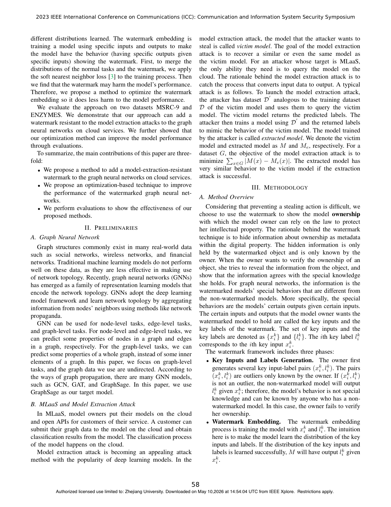

Abstract
—Collecting graph data is costly and well-trained graph neural networks (GNNs) are viewed as intellectual prop- erty. To make better use of GNNs, they are used to provide cloud- based services. However, models on cloud-based services may be leaked under model extraction attacks. Adversaries can extract an imitation model by simply querying the GNNs on the cloud- based services. To protect GNNs, watermarks are embedded in the models. However, the watermarks can be removed by the model extraction attacks. To address this issue, we propose adding a watermark that cannot be ignored by queries from the model extraction attacks. Concretely, we add the soft nearest neighbor loss to the loss function of the watermark embedding process to merge the distributions for the normal tasks and watermarks. We also observe that the watermark brings a performance loss to GNNs and propose an optimization method to maintain the model performance. We evaluate our method on multiple real- world datasets to demonstrate the superiority of the method.
Resources
Citation
@inproceedings{WZCH23,
author = {Haiming Wang and Zhikun Zhang and Min Chen and Shibo He},
title = {{Making Watermark Survive Model Extraction Attacks in Graph Neural Networks}},
booktitle = {{ICC}},
publisher = {IEEE},
year = {2023},
}